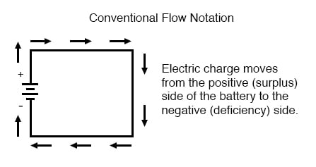
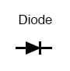
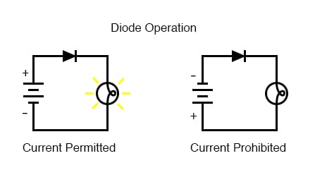
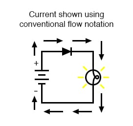
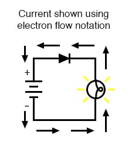

“The nice thing about standards is that there are so many of them to choose from.” —Andrew S. Tanenbaum, computer science professor
When Benjamin Franklin made his conjecture regarding the direction of charge flow (from the smooth wax to the rough wool), he set a precedent for electrical notation that exists to this day, despite the fact that we know electrons are the constituent units of charge, and that they are displaced from the wool to the wax—not from the wax to the wool—when those two substances are rubbed together. This is why electrons are said to have a negative charge: because Franklin assumed electric charge moved in the opposite direction that it actually does, and so objects he called “negative” (representing a deficiency of charge) actually have a surplus of electrons.
By the time the true direction of electron flow was discovered, the nomenclature of “positive” and “negative” had already been so well established in the scientific community that no effort was made to change it, although calling electrons “positive” would make more sense in referring to “excess” charge. You see, the terms “positive” and “negative” are human inventions, and as such have no absolute meaning beyond our own conventions of language and scientific description. Franklin could have just as easily referred to a surplus of charge as “black” and a deficiency as “white,” in which case scientists would speak of electrons having a “white” charge (assuming the same incorrect conjecture of charge position between wax and wool).
However, because we tend to associate the word “positive” with “surplus” and “negative” with “deficiency,” the standard label for electron charge does seem backward. Because of this, many engineers decided to retain the old concept of electricity with “positive” referring to a surplus of charge, and label charge flow (current) accordingly. This became known as conventional flow notation:

Others chose to designate charge flow according to the actual motion of electrons in a circuit. This form of symbology became known as electron flow notation:
In conventional flow notation, we show the motion of charge according to the (technically incorrect) labels of + and -. This way the labels make sense, but the direction of charge flow is incorrect. In electron flow notation, we follow the actual motion of electrons in the circuit, but the + and - labels seem backward. Does it matter, really, how we designate charge flow in a circuit? Not really, so long as we’re consistent in the use of our symbols. You may follow an imagined direction of current (conventional flow) or the actual (electron flow) with equal success insofar as circuit analysis is concerned. Concepts of voltage, current, resistance, continuity, and even mathematical treatments such as Ohm’s Law (chapter 2) and Kirchhoff’s Laws (chapter 6) remain just as valid with either style of notation.
You will find conventional flow notation followed by most electrical engineers, and illustrated in most engineering textbooks. Electron flow is most often seen in introductory textbooks (this one is moving away from it, however) and in the writings of professional scientists, especially solid-state physicists who are concerned with the actual motion of electrons in substances. These preferences are cultural, in the sense that certain groups of people have found it advantageous to envision electric current motion in certain ways. Being that most analyses of electric circuits do not depend on a technically accurate depiction of charge flow, the choice between conventional flow notation and electron flow notation is arbitrary . . . almost.
Many electrical devices tolerate real currents of either direction with no difference in operation. Incandescent lamps (the type utilizing a thin metal filament that glows white-hot with sufficient current), for example, produce light with equal efficiency regardless of current direction. They even function well on alternating current (AC), where the direction changes rapidly over time. Conductors and switches operate irrespective of current direction, as well. The technical term for this irrelevance of charge flow is nonpolarization. We could say then, that incandescent lamps, switches, and wires are nonpolarized components. Conversely, any device that functions differently on currents of different direction would be called a polarized device.
There are many such polarized devices used in electric circuits. Most of them are made of so-called semiconductor substances, and as such aren’t examined in detail until the third volume of this book series. Like switches, lamps, and batteries, each of these devices is represented in a schematic diagram by a unique symbol. As one might guess, polarized device symbols typically contain an arrow within them, somewhere, to designate a preferred or exclusive direction of current. This is where the competing notations of conventional and electron flow really matter. Because engineers from long ago have settled on conventional flow as their “culture’s” standard notation, and because engineers are the same people who invent electrical devices and the symbols representing them, the arrows used in these devices’ symbols all point in the direction of conventional flow, not electron flow. That is to say, all of these devices’ symbols have arrow marks that point against the actual flow of electrons through them.
Perhaps the best example of a polarized device is the diode. A diode is a one-way “valve” for electric current, analogous to a check valve for those familiar with plumbing and hydraulic systems. Ideally, a diode provides unimpeded flow for current in one direction (little or no resistance), but prevents flow in the other direction (infinite resistance). Its schematic symbol looks like this:

Placed within a battery/lamp circuit, its operation is as such:

When the diode is facing in the proper direction to permit current, the lamp glows. Otherwise, the diode blocks current flow just like a break in the circuit, and the lamp will not glow.
If we label the circuit current using conventional flow notation, the arrow symbol of the diode makes perfect sense: the triangular arrowhead points in the direction of charge flow, from positive to negative:

On the other hand, if we use electron flow notation to show the true direction of electron travel around the circuit, the diode’s arrow symbology seems backward:

For this reason alone, many people choose to make conventional flow their notation of choice when drawing the direction of charge motion in a circuit. If for no other reason, the symbols associated with semiconductor components like diodes make more sense this way. However, others choose to show the true direction of electron travel so as to avoid having to tell themselves, “just remember the electrons are actually moving the other way” whenever the true direction of electron motion becomes an issue.
Both models will produce accurate results if used consistently, and they are equally “correct” insofar as they are tools that help us to understand and analyze electric circuits. However, in the context of electrical engineering, conventional current is far more common. This textbook uses conventional current, and anyone who intends to study electronics in an academic or professional environment should learn to naturally think about electric current as something that flows from higher voltage to lower voltage.”